A site for our Waterloo founded student organization committed to fostering a design community
Project Type: UI/UX, Website Design
Role: Product Designer
Tools: Figma, Figjam, Notion
Timeline: Jan 2023 - April 2024
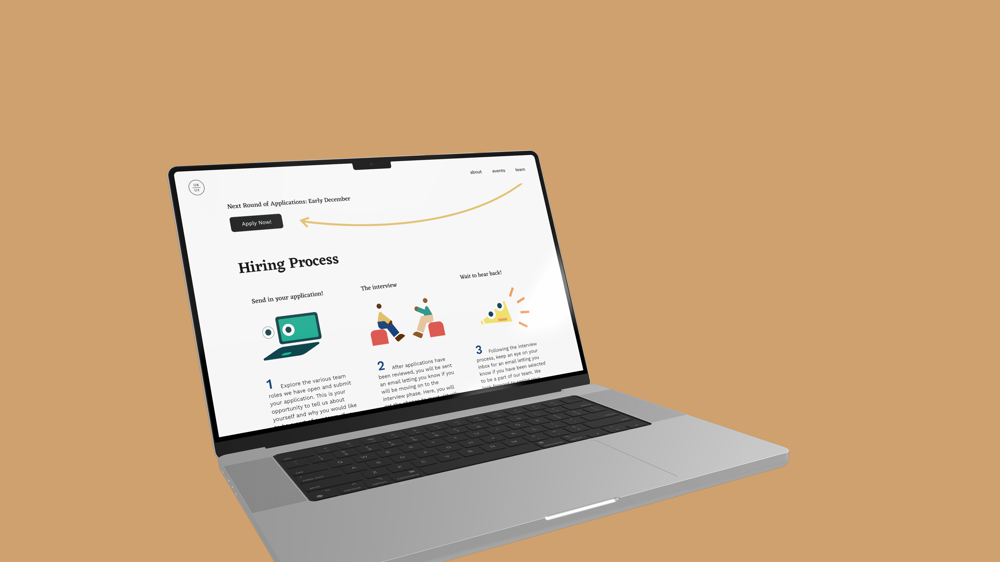
UW/UX is a Waterloo-founded student organization committed to fostering a design community that allows designers to easily collaborate, improve their skills, and learn from a diverse set of viewpoints.
As a product designer, I actively participated in weekly meetings and design sprints in order to help develop UW/UX’s website from the ground up.
Our website team - a Design Lead and four designers - took an Agile approach, breaking the project into phases and emphasizing continuous collaboration and improvement.
Objectives:
Key Results:
Our team mapped out what information we wanted to include on each page of our website.
Our information architecture took inspiration from the website of UW Blueprint - a student-run nonprofit that builds technology for social good.
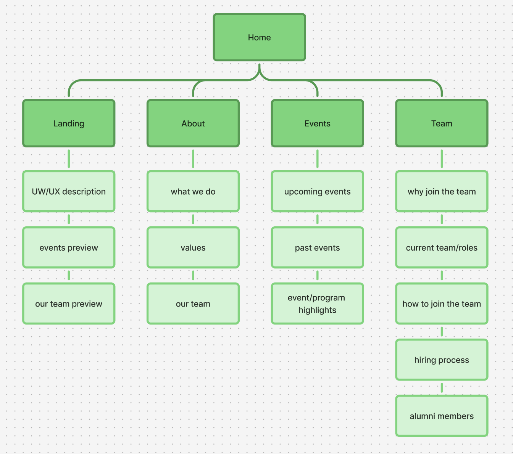
Each designer created low-fidelity wireframes on Figma, brainstorming various layout designs for each page.
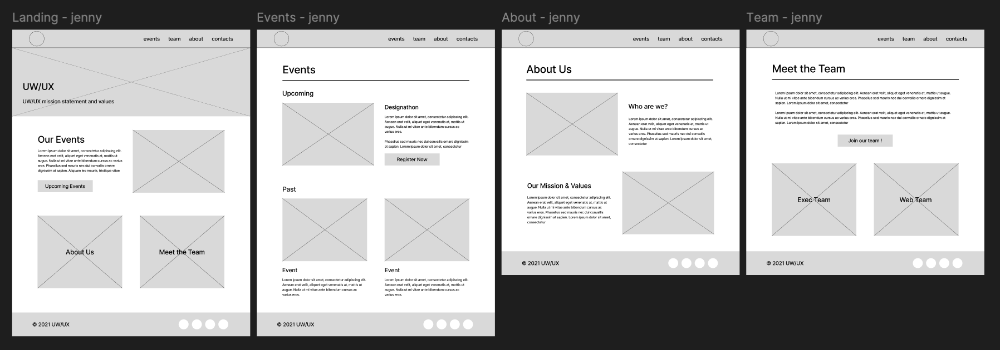
Each designer brainstormed ideas and created mid-fidelity prototypes in Figma, envisioning potential landing page designs. During meetings, we presented our concepts to the project manager, design lead, and fellow designers. We conducted design critique sessions in FigJam, analyzing what worked well and identifying areas for improvement. Through collaborative discussions, we shared our design decisions and provided constructive feedback to refine each iteration.
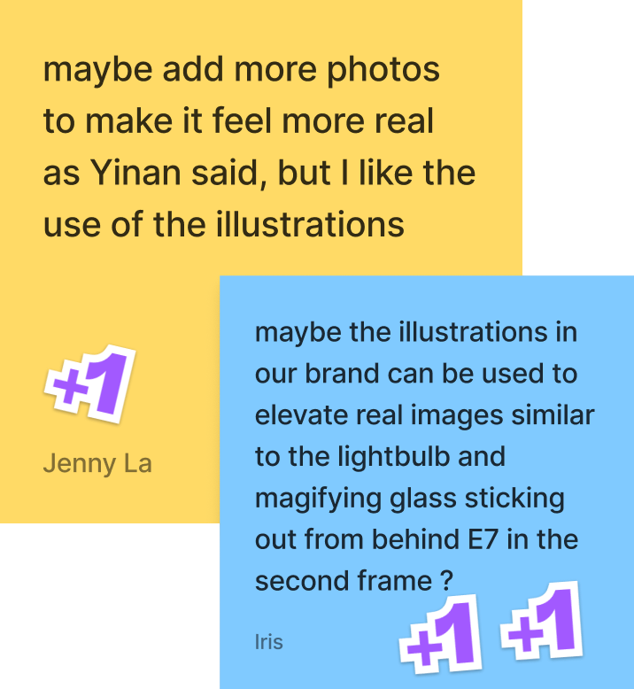
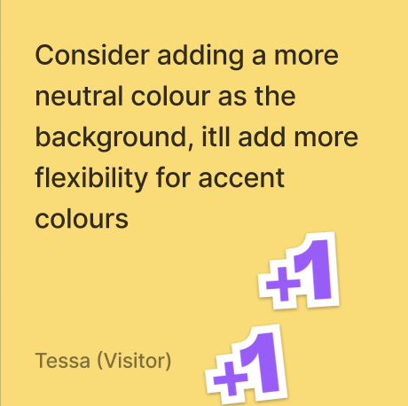
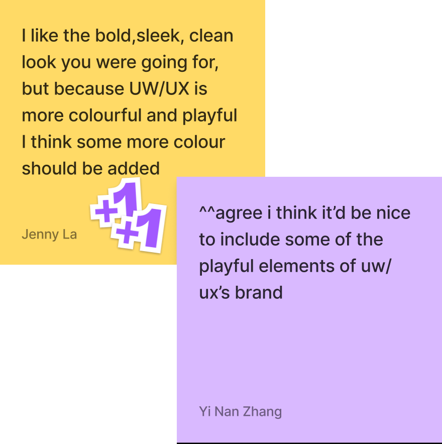
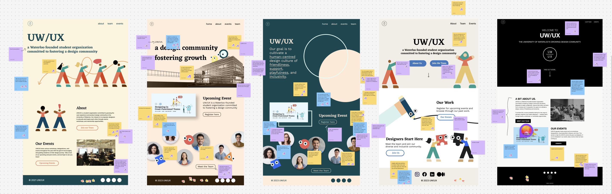
Design Critique Findings
Components that worked well:
Elements to include in hi-fi prototype:
Taking our insights from our design critique, we started refining the design of the landing page.
Our product manager, design lead, and each designer left feedback about the design.
Design Critique Findings
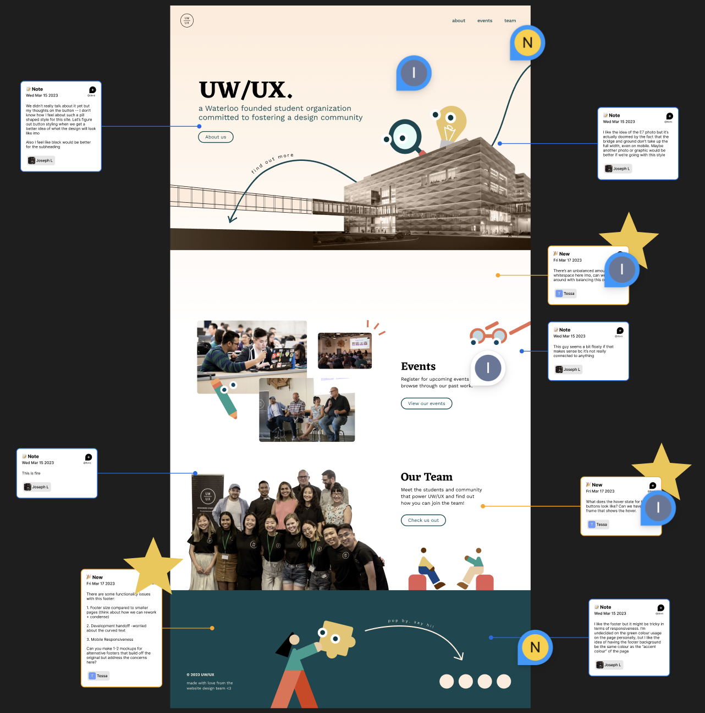
Leveraging feedback from our past design critique session, our team created a visual design system in order to easily maintain consistency throughout each of our site pages. We collectively decided on the design of each of our primary, secondary, and tertiary buttons as well as their hover states. We developed two versions of our footer, incorporating UW/UX's existing brand elements.
Before
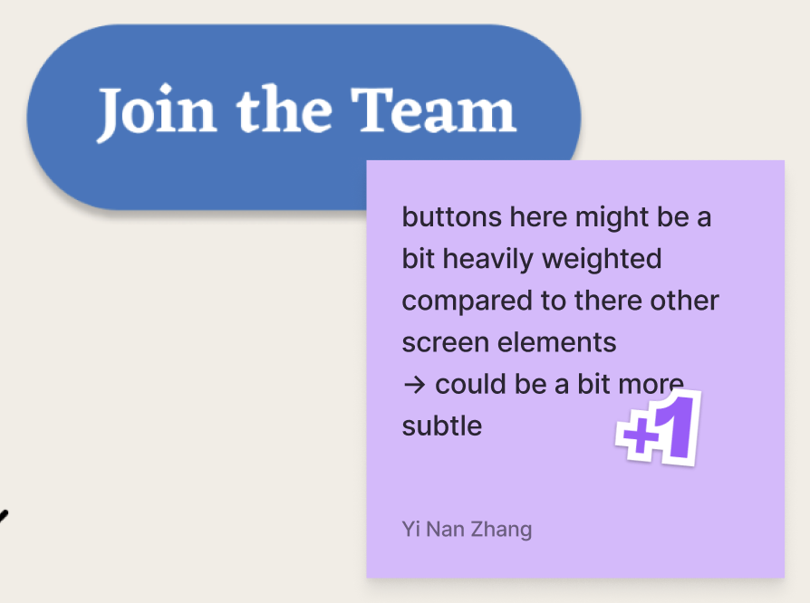
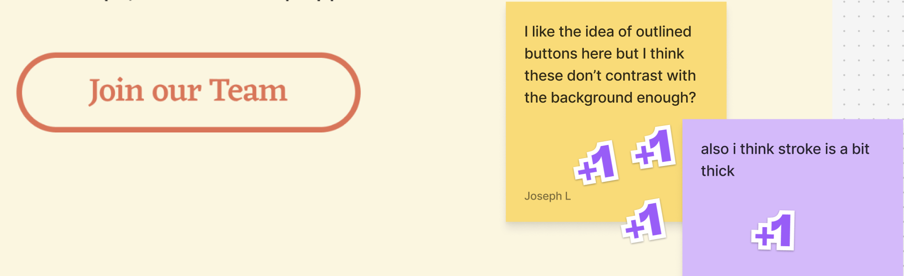
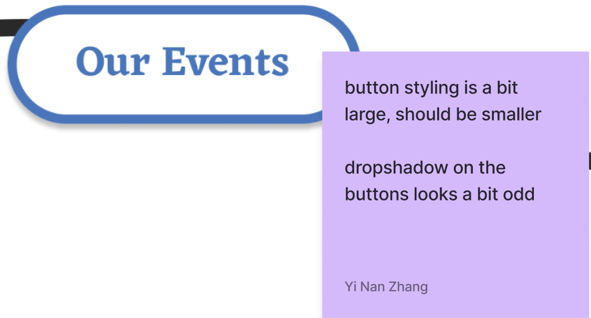
After
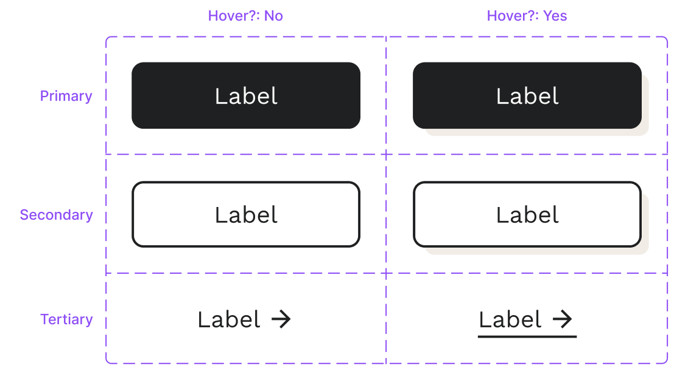
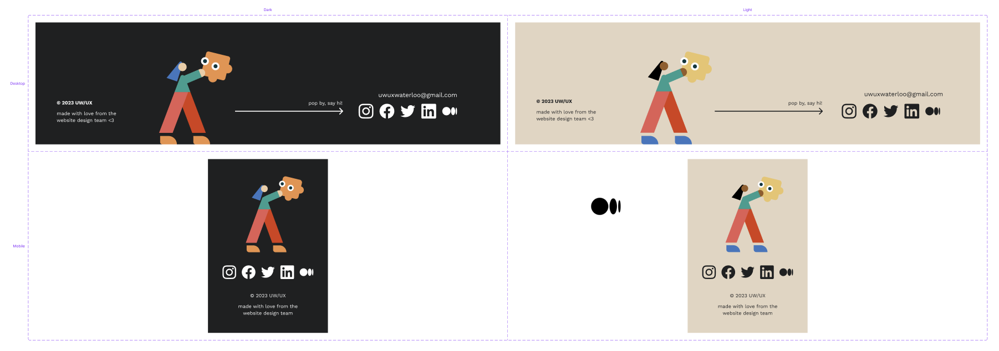
I experimented with different brushes in Adobe Photoshop to create colorful, flowing illustrations that reflected UW/UX’s playful and lively brand. I added brush strokes to the about, events, and team pages as well for a cohesive design.
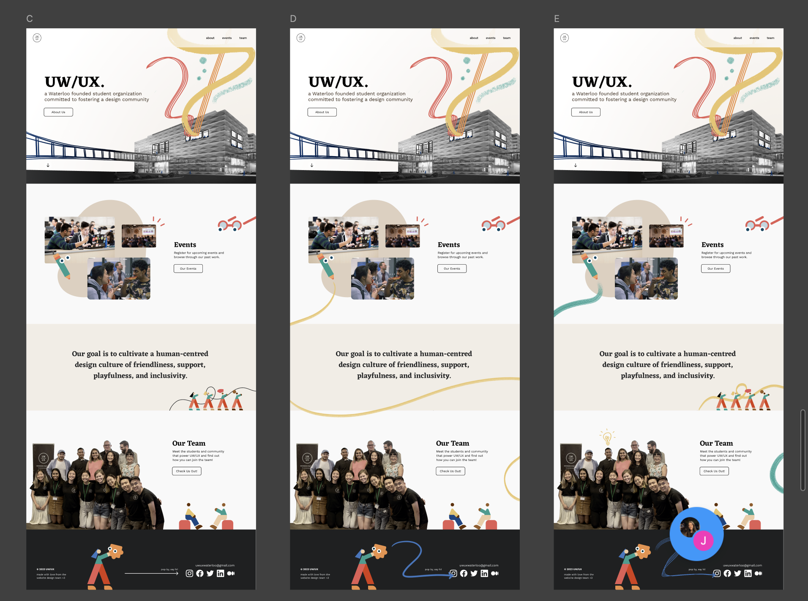
For our high-fidelity prototype, our team worked closely with the UX Research team to get feedback on various components of landing page. The UX Research team conducted 7 semi-structured usability tests with executives from the core team across four sub-teams.
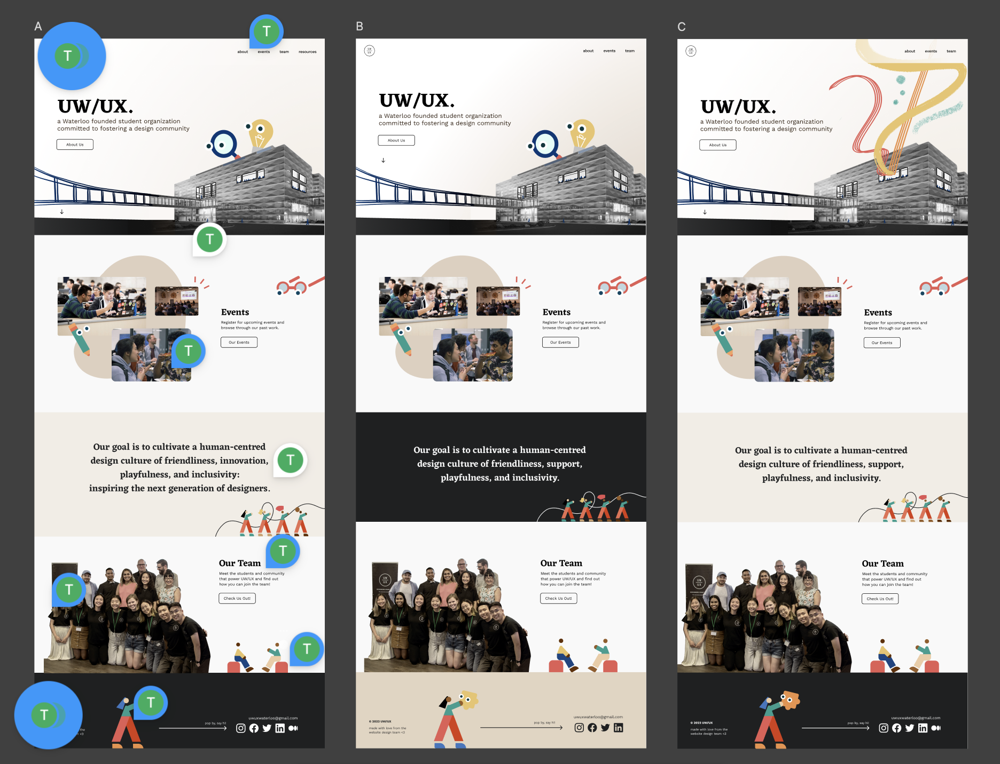
Key Findings & Actionable Items
Our team collaborated with the Content Team in order to establish the description for our 3 core values, as well crafting clear and user-friendly text for our landing, about, and events pages.
I developed the interactive upcoming and past events modals that appear after you click on the various cards for the events page.
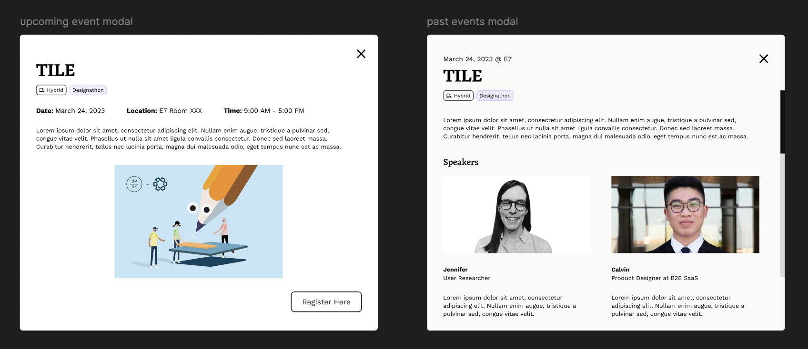
After gathering valuable feedback, we were able to iterate our interactive prototypes, ensuring they were both visually engaging and user-friendly.
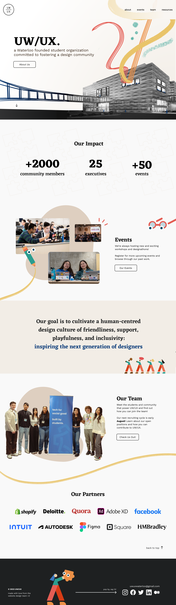
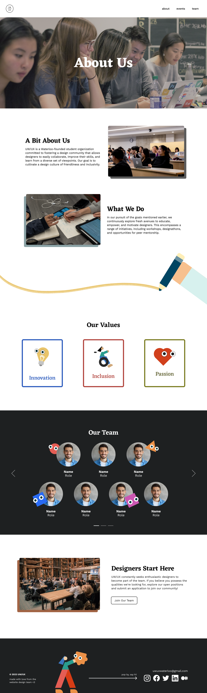
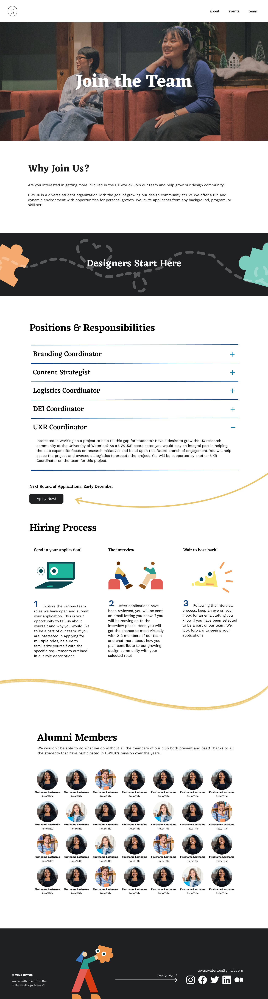
After months of iterations, our team handed off our high-fidelity prototypes to the Web Development Team. As they built the website on Webflow, our Design Team conducted reviews and provided constructive feedback through FigJam.
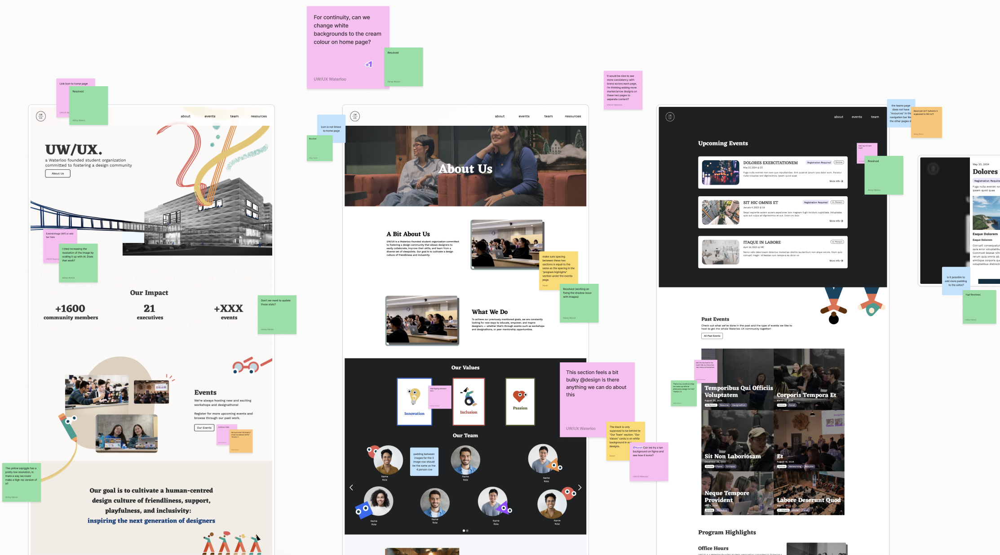
1. Cross-functional collaboration
I collaborated with our project manager, design lead, UX research team, content team, and web development team to refine design solutions and deliver a cohesive website.
2. Feedback at every stage
Constructive feedback was regularly shared in weekly meetings, which allowed me to continuously improve and iterate my designs quickly.